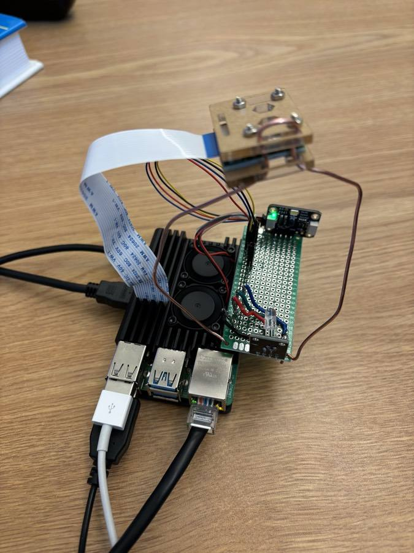

Claude-Light
A real instrument you can run experiments on from anywhere.
Claude-Light is a remote-controlled instrument for learning statistics, regression, optimization and design of experiments. You set the brightness of a red, green and blue LED, and a spectral sensor measures the light at 8 visible wavelengths plus clear and near-infrared. There is one real instrument, shared by everyone, sitting in a lab at Carnegie Mellon University. The pages on this site talk to it directly from your browser.
/api?R=0.12&G=0.45&B=1.00
· illustrationRun an experiment
One input, one output. Enter a list of green levels and measure the 515nm signal. Start here. RGB machine
Three inputs, ten outputs. Set the red, green and blue LEDs and see the full spectrum. Session
Measure one point at a time and build up a data set as you go. Statistics
How many experiments have been run, and where in the world they come from.
Use it from code
Pass R, G and B levels from 0 to 1 and get JSON back:
curl "https://claude-light.cheme.cmu.edu/api?R=0.12&G=0.45&B=1"
In Python, install claude-light-python, or use requests directly:
import requests
resp = requests.get('https://claude-light.cheme.cmu.edu/api',
params={'R': 0.12, 'G': 0.45, 'B': 1})
resp.json()['out']['515nm']
The guide covers the API, the outputs, and what to do when the instrument is busy.
Use it with an AI agent
Install the Claude-Light skill so Claude Code, Codex, Copilot, Cursor and other agents know how to run experiments on it:
uvx --from git+https://github.com/jkitchin/knowhow knowhow add jkitchin/claude-light --skill claude-light
or npx skills add jkitchin/claude-light --skill claude-light.
See the guide for more.
Learn more
How to use each machine, the API, and suggested exercises. Exercises
Statistics, regression, machine learning, active learning and design of experiments with Claude-Light. Build your own
The parts list and how to set up the Raspberry Pi, server and web front end.
The instrument

It is small: a Raspberry Pi drives an RGB LED, an AS7341 spectral sensor reads the light, and a Pi camera can take a picture. Your request joins a queue, the LED is set, the sensor integrates the light, and the readings come back as JSON.
Because it is a real device, repeated measurements are not identical. That is the point: you analyze data from a lab instrument, not a simulation.